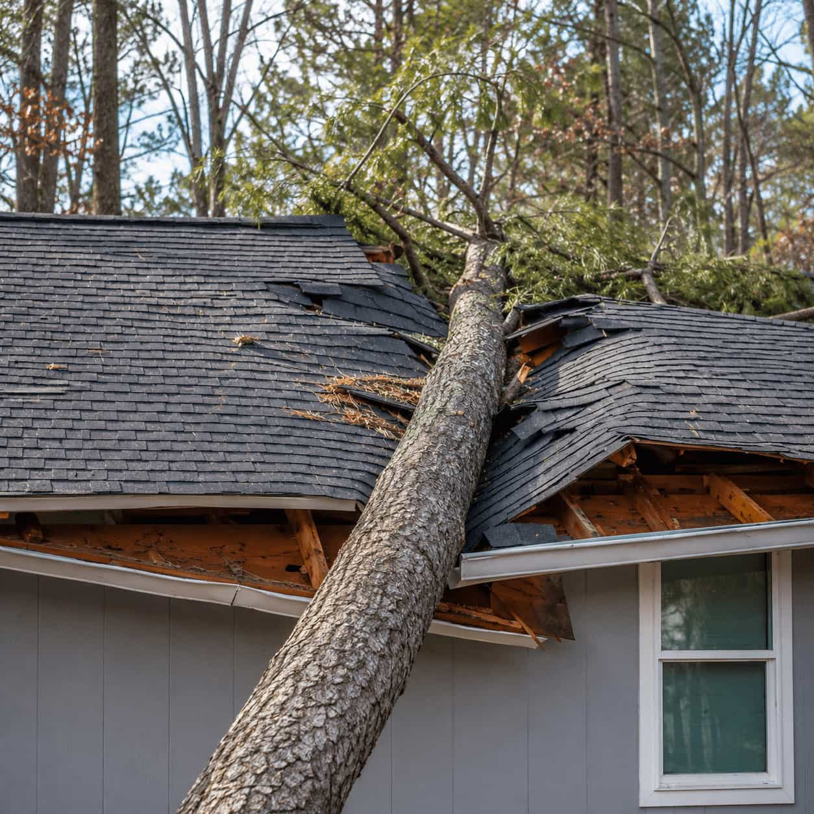

Wind damage
For lifted shingles, missing roof sections, loose materials, and wind-related damage.
Weather-Related Roofing Service
Compare local roofing professionals for wind damage, hail impact, heavy rain leaks, debris damage, and other weather-related roof concerns.
What this service covers
Use this category when roof damage appears after wind, hail, heavy rain, fallen debris, or severe weather conditions.
For lifted shingles, missing roof sections, loose materials, and wind-related damage.
For roof concerns after hail events, surface impact, dents, or damaged shingles.
For leaks or water intrusion that appears after intense rain or repeated storms.
For branches, flying debris, or objects that may have damaged roof surfaces.
For visible damage, exposed areas, or roof sections that need prompt review.
For homeowners who want a professional roof review after a storm event.
Common storm signs
Storm-related roof issues are not always obvious from the ground. If damage appeared after severe weather, a local professional can review the roof and discuss repair options.
Start Storm Damage RequestRequest process
Roofen helps organize your storm damage request so independent local roofing professionals can understand the weather event, damage signs, urgency, and location.
Share whether wind, hail, rain, debris, or severe weather may have caused damage.
Mention leaks, missing shingles, exposed areas, fallen debris, or impact concerns.
Independent local professionals may respond based on your area and request details.
Review available options and choose the contractor that fits your storm damage project.
Why storm damage requests matter
Storm repair requests help homeowners compare local options after severe weather and organize the details needed for professional review.

Weather-related issuesStorm situations
Availability depends on independent local providers in your area. Include the storm date, visible roof signs, and whether leaks or debris are involved.
Storm focus
When submitting a storm damage request, describe the weather event, what changed afterward, and whether the issue is urgent or still being evaluated.
Related problem guide
This guide is not a diagnosis. It helps homeowners choose the most relevant service category before starting a quote-comparison request.
Storm damage FAQ
Quick answers about using Roofen to compare local roofing professionals after severe weather.
Storm damage roof repair may include wind damage, hail impact, heavy rain leaks, debris impact, missing shingles, or other weather-related roof concerns.
Yes. Roofen can help homeowners start a request for hail, wind, rain, and debris-related roof concerns so independent local providers may respond.
Choose emergency roof repair if water is actively entering or the issue cannot wait. Choose storm damage roof repair when the concern is weather-related and needs review.
Include the storm date, type of weather, visible roof signs, whether there are leaks, and whether branches or debris hit the roof.
Yes. Submitting a storm damage roof repair request through Roofen is free and does not create an obligation to hire a contractor.
Weather damage request
Start a storm damage roof repair request for wind, hail, heavy rain, debris impact, and weather-related roof concerns.